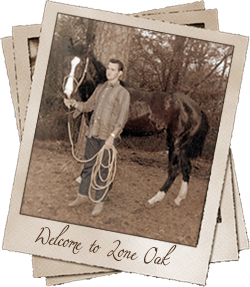
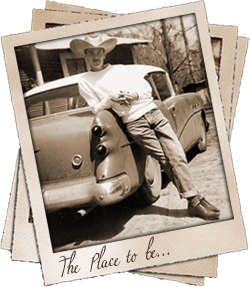

HK Lone Oak Farms is located just north of Baton Rouge, Louisiana and east of St. Franicsville in the lush green country side of the deep south. The farm is owned by Harry and Julie Knight, who specialize in world class halter horses. the farm boasts several world champion and world champion producing brood mares whose bloodlines include Obvious Conclusion, Playgirls Conclusion and Touchdown Kid. Please visit our broodmare page for a complete pedigree show record and produce record on each mare.
Harry has had a life long passion for good horses. He purchased his first registered Quarter Horse in 1958 as a teenager in Bogalusa LA with money earned from breaking horses after school. He dabbled in many venues with horses including racing cutting and western pleasure. Harry also became involved with his local and state Quarter Horse associations and was eventually elected to the AQHA board of directors for Louisiana.
Harry found that his true love was that of a structurally correct, beautiful show horse and turned his focus to breeding and raising world class halter horses. Harry raised multiple futurity champions and halter class winners but with the inception of the World Show, he wanted to raise the bar. Today Harry has raised multiple World champions and World champion producers. Harry and Julie invite you to tour our web site, and visit us if possible, or contact us for more information about quality show horses for sale at all times.
Website Designed & Created by Sarah Baldwin.